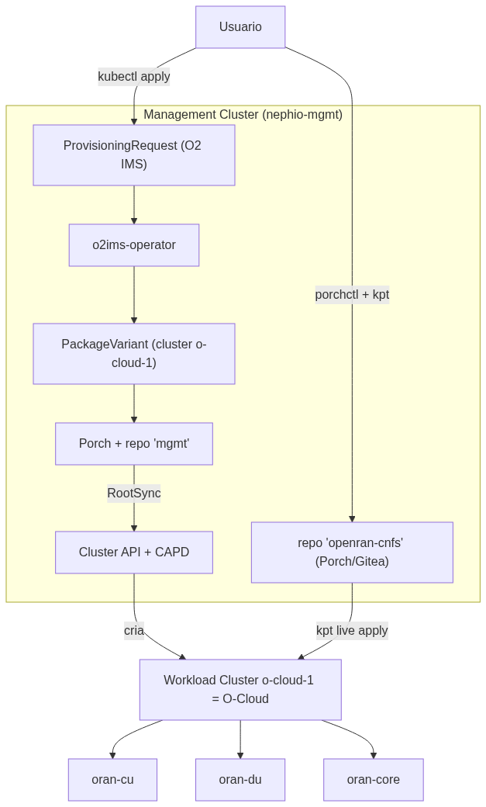

Provisionamento e gerenciamento de uma pilha Open RAN simulada com Nephio
Relatório Técnico — Parte 2 (70%)
"Nephio is a cloud-native automation and orchestration platform that can implement or
support functions associated with the SMO and O-Cloud management architecture."
— framing adotado neste trabalho (Nephio não é apresentado como o SMO oficial do O-RAN).
Autor: Diego Abreu
Data: 2026-09-11
Evidência completa: diretórios evidence/ e results/experiments.csv do repositório do laboratório
1. Objetivo
Usar o Nephio (analisado teoricamente na Parte 1) para, na prática, provisionar e
gerenciar uma pilha Open RAN simulada — três Network Functions representativas
(oran-cu, oran-du, oran-core) — sobre um O-Cloud
provisionado pelo próprio Nephio via O2 IMS, demonstrando os mecanismos reais de
provisioning, configuration management, orchestration e lifecycle management, com
evidência mensurável (tempo, RAM, CPU) de cada operação.
Detalhes completos: docs/environment-assessment.md e docs/02-nephio-installation.md.
3. Arquitetura

Fig. 1 — Duas camadas do laboratório: infraestrutura (O2 IMS → o-cloud-1) e workload/NF (Porch → kpt live apply → CNFs).
Camada 1 (infraestrutura): O2 IMS provisiona o o-cloud-1 — já demonstrado
e evidenciado na Parte 1 / docs/05-experiment-report.md.
Camada 2 (workload/NF), foco desta Parte 2: as 3 CNFs chegam ao o-cloud-1
via um pacote kpt publicado no Porch (repositório dedicado openran-cnfs), não por
kubectl apply direto — ver docs/provisioning-flow.md.
Fig. 2 — Sequência observada na Parte 1 para a Camada 1 (infraestrutura): ProvisioningRequest → o2ims-operator → Porch/PackageVariant → Config Sync → Cluster API/CAPD → o-cloud-1.
4. Ferramentas
Ferramenta
Papel nesta Parte 2
kpt
autoria do pacote (lab/nephio/openran-cnfs), pipeline de funções, kpt live apply (reconciliação declarativa com inventário)
Porch / porchctl
ciclo de vida do pacote (Draft → Proposed → Published), repositório dedicado
kind + Cluster API + CAPD
criação do o-cloud-1 (via O2 IMS, Parte 1)
kubectl
operações imperativas de comparação (scale, delete pod) e validação
FastAPI/Python + Docker
as 3 CNFs simuladas
5. Network Functions utilizadas
oran-cu, oran-du, oran-core — workloads
representativos (FastAPI, ~30–50 MiB de RAM cada), não NFs O-RAN reais. Cada uma
expõe /health, /config (GET/PUT/POST), /metrics
(Prometheus). Detalhes e justificativa em lab/cnfs/README.md e avaliação de
substituição por NFs reais em docs/real-nf-extension.md (não realizada — RAM
insuficiente para um core 5G real ao lado do Nephio completo).
Fluxo completo demonstrado em docs/provisioning-flow.md: pacote kpt autoral →
porchctl rpkg init/pull/push/propose/approve → PackageRevision
Published no repositório openran-cnfs → kpt live apply no
o-cloud-1 (com ResourceGroup como inventário declarativo).
Experimento 1: provisionamento das 3 CNFs do zero em 20,4 s
(results/experiments.csv).
Fig. 3 — Fluxo real de entrega das CNFs: Intent (pacote autoral) → Package (Draft) → Repository (Published) → pull → Reconciliation (kpt live apply) → Kubernetes → CNF.
TERMINAL REAL — Experimento 1 (provisionamento do zero)
== 1) publica/atualiza o pacote no Porch (repo=openran-cnfs pkg=openran-nfs) ==
revisão mais recente: openran-cnfs.openran-nfs.v1789101326 — criando uma NOVA revisão (rpkg copy)
openran-cnfs.openran-nfs.v1789101492 created
openran-cnfs.openran-nfs.v1789101492 pushed
openran-cnfs.openran-nfs.v1789101492 proposed
openran-cnfs.openran-nfs.v1789101492 approved
== 3) reconcilia no o-cloud-1 via kpt live apply (ResourceGroup = inventário declarativo) ==
initializing "resourcegroup.yaml" data (namespace: default)...success
apply phase started
namespace/openran-lab apply successful
configmap/oran-core-identity apply successful
configmap/oran-cu-identity apply successful
configmap/oran-du-identity apply successful
service/oran-core apply successful
service/oran-cu apply successful
service/oran-du apply successful
deployment.apps/oran-core apply successful
deployment.apps/oran-cu apply successful
deployment.apps/oran-du apply successful
apply result: 10 attempted, 10 successful, 0 skipped, 0 failed
reconcile result: 10 attempted, 10 successful, 0 skipped, 0 failed, 0 timed out
== 4) validação ==
oran-cu -> 200 {"status":"ok","nf_name":"oran-cu","nf_type":"O-CU","nf_version":"v1","uptime_seconds":6.8}
oran-du -> 200 {"status":"ok","nf_name":"oran-du","nf_type":"O-DU","nf_version":"v1","uptime_seconds":7.9}
oran-core -> 200 {"status":"ok","nf_name":"oran-core","nf_type":"5GC-AMF-sim","nf_version":"v1","uptime_seconds":9.1}
Fonte: evidence/experiments/20260911-013811_exp1_deploy.log (saída completa e inalterada, apenas recortada)
7. Configuration Management
Duas camadas distintas, deliberadamente não confundidas:
Configuração operacional da NF (análoga ao que O1/NETCONF faria com uma NF real): API
própria /config de cada CNF. Experimento 2:oran-du.cell_id1 → 2 via PUT /config, em 0,7 s.
Configuração de implantação (pacote/GitOps): alterar o ConfigMap/Deployment
no pacote autoral e republicar via Porch. Usado no Experimento 5 (upgrade) — ver §8.
Achado real registrado: mudar apenas o ConfigMap consumido via
envFromnão dispara um novo rollout do Deployment — o hash do
pod template não muda, então o Kubernetes não cria novos Pods, e os Pods já existentes mantêm as
variáveis de ambiente antigas até reiniciarem por outro motivo. Corrigido adicionando um carimbo
de versão em spec.template.metadata.annotations, que força a criação de um novo
ReplicaSet (ver YAML abaixo, §9).
8. Lifecycle Management
Operação
Experimento
Duração
Resultado
Instantiate
1
20,4 s
3/3 NFs Running
Scale (1→2)
3
5,7 s
oran-cu 2/2 Running
Update/Upgrade (v1→v2)
5
15,0 s
revision 1→2, rollout real, /health.nf_version=v2
Recover (falha)
4
3,9 s
pod deletado → novo pod Running, nome diferente
Terminate
6
10,8 s
oran-core removido via prune do kpt live apply (não kubectl delete manual)
Todos os 6 experimentos: SUCCESS (results/experiments.csv).
TERMINAL REAL — Experimento 5 (upgrade v1→v2, rollout forçado)
openran-cnfs.openran-nfs.v1789101547 created / pushed / proposed / approved
NAME REVISION LATEST LIFECYCLE REPOSITORY
openran-cnfs.openran-nfs.v1789101547 6 true Published openran-cnfs
apply result: 10 attempted, 10 successful, 0 skipped, 0 failed
NAME READY STATUS RESTARTS AGE
pod/oran-cu-589c8458db-q5csv 1/1 Terminating 0 61s
pod/oran-cu-c44ff566c-jq728 1/1 Running 0 5s
oran-cu -> 200 {"status":"ok","nf_name":"oran-cu","nf_type":"O-CU",""nf_version":"v2","uptime_seconds":1.9}
Fonte: evidence/experiments/20260911-013906_exp5_upgrade.log — note o novo ReplicaSet (oran-cu-c44ff566c-*) substituindo o antigo (oran-cu-589c8458db-*) e nf_version mudando de v1 para v2.
TERMINAL REAL — Experimento 6 (terminate por prune)
A orquestração observada opera em duas granularidades:
Porch/kpt decide como compor e publicar um pacote (upstream → downstream, mutators).
Kubernetes (ReplicaSet/Deployment controllers) decide como manter o estado
declarado (reconciliação contínua) — sem intervenção manual, mesmo quando o pacote não muda
(Experimento 4).
YAML REAL — lab/nephio/openran-cnfs/oran-cu-deployment.yaml
metadata:
labels:
app: oran-cu
annotations:
# bump isto no pacote para forcar um novo ReplicaSet (rollout) - mudar
# so o ConfigMap (envFrom) NAO dispara rollout automatico no Kubernetes.
openran-lab/nf-version: "v2"
spec:
containers:
- name: oran-cu
envFrom:
- configMapRef: {name: oran-cu-identity}
Achado real registrado (bug de engenharia, corrigido): a primeira versão do script de
entrega (deploy-cnfs-via-porch.sh) recriava o diretório de trabalho local — e
portanto o inventário (ResourceGroup) — a cada chamada, o que fazia o
kpt live apply gerar um inventory-id novo toda vez e, consequentemente,
recusar tocar nos recursos já existentes (policy: MustMatch,
status: NoMatch) — o Experimento 5 falhou silenciosamente duas vezes antes dessa
causa ser isolada e corrigida (persistindo o inventário entre chamadas). Este é exatamente o
tipo de comportamento de "propriedade declarativa" que diferencia orquestração GitOps de um
simples script de kubectl apply.
BASH REAL — lab/nephio/deploy-cnfs-via-porch.sh (correção aplicada)
# IMPORTANTE: o diretório de entrega é PERSISTENTE entre chamadas (não é apagado),
# porque ele guarda o resourcegroup.yaml (inventário) que o kpt usa para saber quais
# recursos já pertencem a este pacote. Apagar e recriar a cada chamada geraria um
# inventory-id novo a cada vez, e o kpt recusaria tocar nos recursos já existentes
# (policy MustMatch -> NoMatch) - foi exatamente o bug encontrado e corrigido aqui.
DELIVERY=/tmp/openran-cnfs-delivery
had_inventory=0
[ -f "$DELIVERY/resourcegroup.yaml" ] && had_inventory=1
rm -rf /tmp/openran-cnfs-pull-tmp
porchctl rpkg pull "$NAME" /tmp/openran-cnfs-pull-tmp -n default
mkdir -p "$DELIVERY"
if [ "$had_inventory" -eq 1 ]; then
cp "$DELIVERY/resourcegroup.yaml" /tmp/openran-cnfs-pull-tmp/resourcegroup.yaml
fi
rm -rf "$DELIVERY" && mv /tmp/openran-cnfs-pull-tmp "$DELIVERY"
10. Monitoramento
Opção leve (sem Prometheus/Grafana) — ver docs/monitoring.md:
/metrics de cada CNF (formato Prometheus: nf_up,
nf_requests_total, nf_config_version, nf_restart_count),
docker stats/free -h para custo de host, logs e eventos do Kubernetes.
metrics-server não instalado (decisão explícita).
CÓDIGO REAL — endpoint /metrics (lab/cnfs/oran-du/app.py)
@app.get("/metrics", response_class=PlainTextResponse)
def metrics():
lines = [
"# TYPE nf_up gauge",
f'nf_up{{nf_name="{NF_NAME}",nf_type="{NF_TYPE}"}} 1',
"# TYPE nf_requests_total counter",
f'nf_requests_total{{nf_name="{NF_NAME}"}} {STATE["requests_total"]}',
"# TYPE nf_config_version gauge",
f'nf_config_version{{nf_name="{NF_NAME}"}} {STATE["config_version"]}',
]
return "\n".join(lines) + "\n"
Nenhuma captura de /metrics foi incluída como "print" nesta seção porque
nenhuma ficou registrada em evidence/ durante os experimentos formais — por rigor,
mostra-se aqui o código real do endpoint (que foi exercitado manualmente durante o
desenvolvimento) em vez de simular uma saída.
11. Falhas e recuperação
Duas classes de "falha" foram tratadas neste trabalho, e são deliberadamente distinguidas:
Falha simulada de Pod (Experimento 4): kubectl delete pod → ReplicaSet
recria em 3,9 s (pod antigo oran-du-7d44959c84-cnsx4 → novo
oran-du-7d44959c84-sf26s, ver results/experiments.csv). Isto é
self-healing do Kubernetes (desired state vs. actual state), não healing de uma NF
de telecom (sem estado de sessão, sem re-registro em interfaces O-RAN).
Falhas de engenharia reais, encontradas e corrigidas durante os experimentos (não
simuladas de propósito, mas genuínas):
(a) porchctl rpkg push sem pull prévio → metadados ausentes;
(b) mudança apenas do ConfigMap não dispara rollout (§7);
(c) inventário do kpt recriado a cada chamada, quebrando a reconciliação de recursos já
existentes (§9).
As três foram diagnosticadas com evidência (logs reais) e corrigidas nos scripts —
documentadas aqui e em docs/provisioning-flow.md em vez de escondidas.
12. Resultados
DADOS REAIS — results/experiments.csv
Operação
Duração (s)
Status
Detalhe
provision-all-cnfs
20.4
success
3 NFs via kpt live apply
config-update-oran-du-cell_id
0.713
success
cell_id: 1 → 2 via PUT /config
scale-oran-cu-1to2
5.7
success
réplicas: 1 → 2
recover-oran-du
3.9
success
pod antigo=oran-du-7d44959c84-cnsx4 → novo=oran-du-7d44959c84-sf26s
O laboratório inteiro (management + O-Cloud + 3 CNFs + Porch + Gitea + Cluster API) ficou
bem abaixo da meta de 10–12 GB do enunciado, com folga para os experimentos.
14. Limitações
CNFs simuladas, não NFs O-RAN reais — sem protocolos de rádio, planos de
usuário/controle, ou interfaces F1/E1/E2.
Sem GitOps contínuo no o-cloud-1 — a entrega usa kpt live apply sob
demanda, não um RootSync/Config Sync observando o repositório continuamente (decisão de escopo
— ver docs/provisioning-flow.md §4).
Sem O1 — configuração operacional via API REST própria da NF, não NETCONF/YANG.
Sem monitoramento O-RAN (VES, PM Jobs) — apenas /metrics Prometheus-like
e kubectl.
cell_id/config de domínio não propaga de volta ao pacote — a mudança via
/config (API da NF) e a mudança via pacote (Porch) são caminhos independentes; uma
alteração feita por um não aparece automaticamente no outro.
Ver também as limitações do O2 IMS/O-Cloud herdadas da Parte 1
(docs/05-experiment-report.md §11) — o o-cloud-1 não sobrevive a um restart da VM
do WSL2 sem re-provisionamento.
15. Conclusão
O experimento demonstrou, com evidência mensurável e reprodutível, que o Nephio consegue
orquestrar o ciclo de vida completo de Network Functions cloud-native —
provisionamento, configuração, escala, atualização, recuperação e terminação — usando seus
mecanismos nativos (kpt, Porch, reconciliação declarativa), não apenas kubectl
apply. Dois bugs de engenharia reais foram encontrados e corrigidos ao longo do processo
(rollout não disparado por mudança de ConfigMap; inventário do kpt não persistente entre
chamadas), reforçando que este foi um experimento prático de verdade, não um roteiro
follow-along. As limitações — ausência de O1, de NFs reais, de GitOps contínuo no workload
cluster — são as mesmas fronteiras já mapeadas com rigor na Parte 1, agora confirmadas na
prática.
Relatório completo com todas as fontes, scripts e evidências brutas:
repositório do laboratório — report/, docs/, evidence/,
results/experiments.csv.